Every great idea
starts as a seed.
작은 아이디어에서 시작해 사용자의 경험을 고민하고 설계합니다.AI를 새로운 디자인 도구로 활용하며, 생각을 실제 경험으로 구현합니다.
BETWEEN
IDEAS
AND IMAGINATION
I BUILD
THINGS
THAT WORK
LET’S MAKESOMETHING GOOD.
Copyright © HWANG HYESEON 2026
